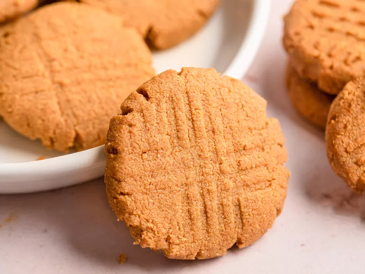

Peanut Butter Cookies

Description
Soft and chewy peanut butter cookies deliver a rich, nutty flavor in every bite. With lightly crisp edges and a tender, melt-in-your-mouth center, they are marked with classic fork patterns. Perfectly balanced sweetness and a warm, homemade aroma make them an irresistible treat for any occasion or craving.
Ingredients
- 1 cup peanut butter
- 1 cup white sugar
- 1 large egg
Steps
- Gather all ingredients. Preheat the oven to 350 degrees F (175 degrees C).
- Mix peanut butter, sugar, and egg together in a bowl using an electric mixer until smooth and creamy.
- Roll dough into 1-inch balls and place 2 inches apart on ungreased baking sheets.
- Flatten each with a fork, making a criss-cross pattern. Bake in the preheated oven until edges are firm, about 10 minutes. Cool on the baking sheet briefly before removing to a wire rack to cool completely.
- Enjoy!
Home